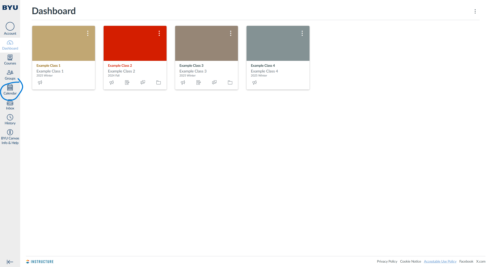
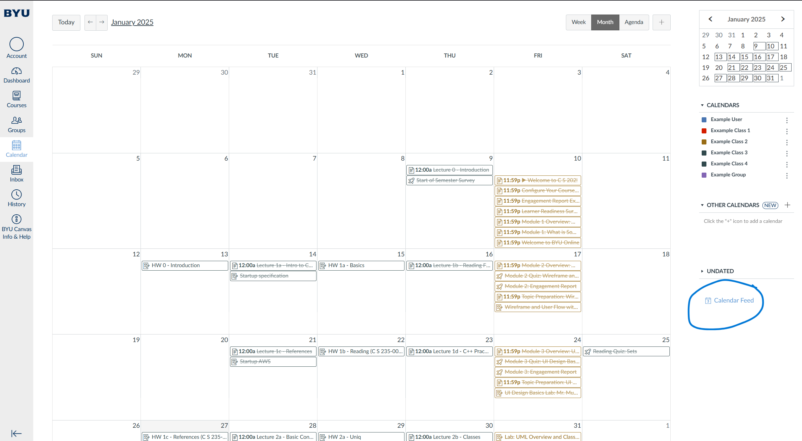
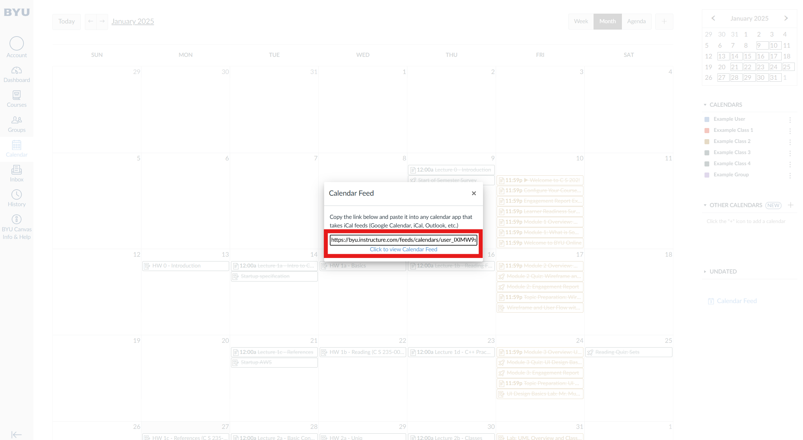
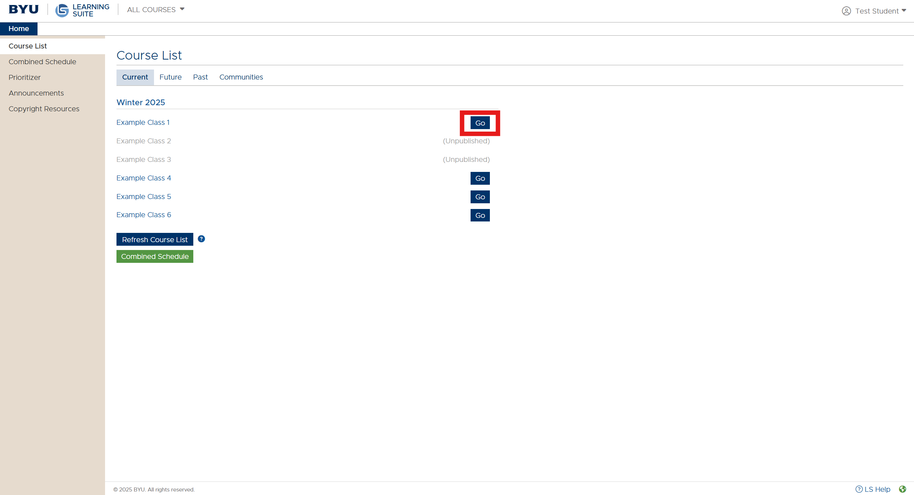
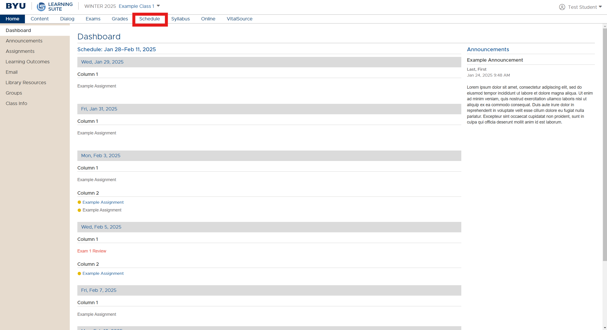
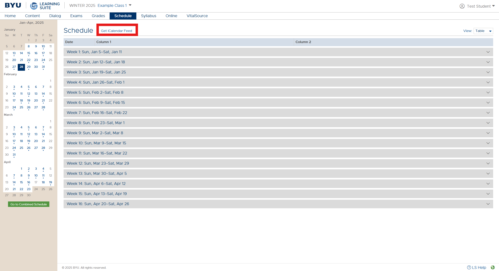
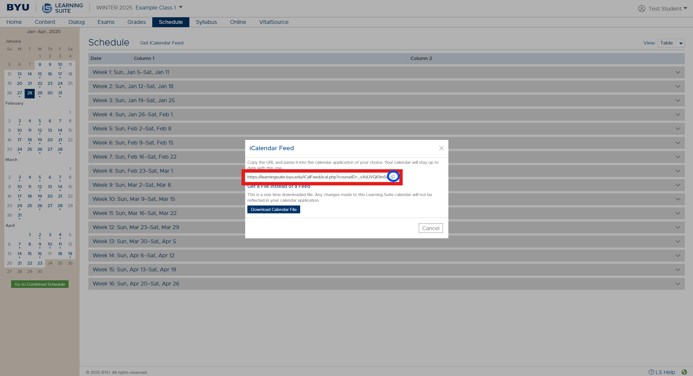

How to find Calendar Links in Canvas:
Step 1: Click on the calendar icon

Step 2: Click on "Calendar Feed"

Step 3: Copy link

How to find Calendar Links in LearningSuite:
Step 1: Select the class

Step 2: Click on "Schedule"

Step 3: Click on "Get iCalendar Feed"

Step 4: Copy link
